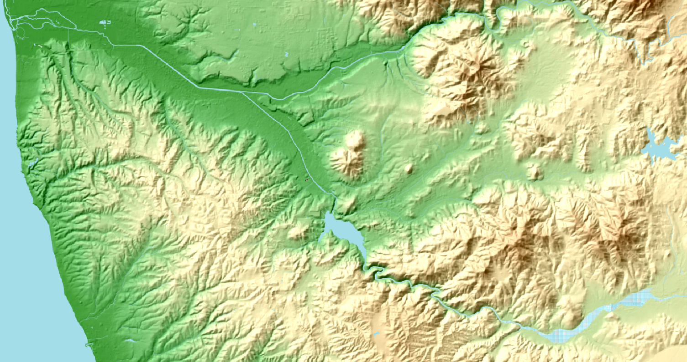
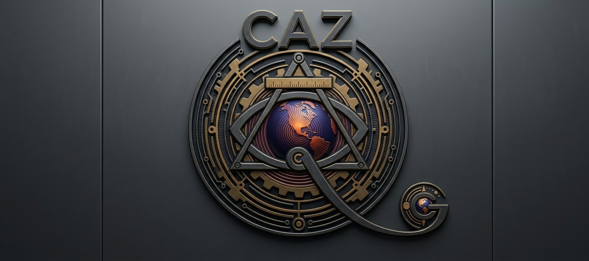
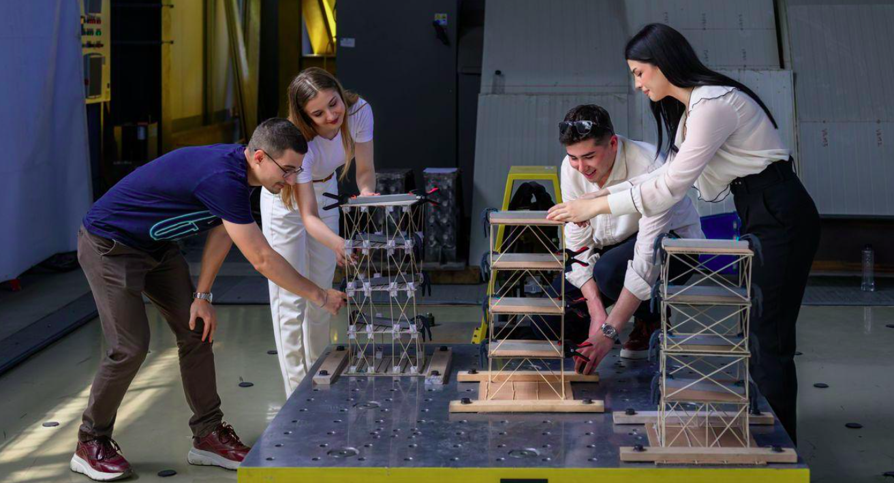

Misión
Integrar conocimiento técnico y visión multidisciplinaria para desarrollar soluciones responsables y eficientes.
Integración técnica. Visión multidisciplinaria. Soluciones inteligentes.
Principios que orientan nuestra manera de entender los problemas y desarrollar soluciones.
Integrar conocimiento técnico y visión multidisciplinaria para desarrollar soluciones responsables y eficientes.
Ser un referente de consultoría por la calidad, innovación y solidez de nuestras soluciones.
Rigor técnico, integridad profesional, innovación y compromiso con cada proyecto.
Comprender, analizar, integrar disciplinas y proponer soluciones fundamentadas.

CAZ, Consultores de la A a la Z, integra conocimientos de ingeniería, construcción, análisis técnico y consultoría. Nuestra perspectiva parte de comprender cada problema como un sistema y abordar sus componentes de manera integral.
Soluciones profesionales para el análisis, desarrollo y seguimiento de proyectos constructivos.

Apoyo técnico y profesional en proyectos de construcción e ingeniería.

Seguimiento técnico y revisión de procesos durante la ejecución de proyectos.

Información espacial y herramientas técnicas para el conocimiento del territorio.
Análisis especializado, asesoría y acompañamiento para la toma de decisiones.

Análisis técnico especializado y evaluación profesional de situaciones y proyectos.

Consultoría especializada en protección, evaluación y gestión de activos.

Formación técnica e innovación educativa mediante aprendizaje basado en proyectos, experimentación, análisis estructural, sistemas de información geográfica e inteligencia artificial aplicada.
Cuéntanos qué necesitas. Estamos listos para analizar el problema y explorar soluciones.
Para información sobre nuestros servicios y posibilidades de colaboración, escríbenos.
cazconsultores2@gmail.com